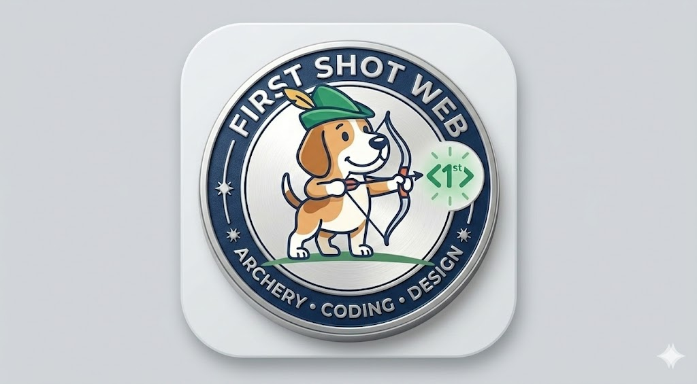
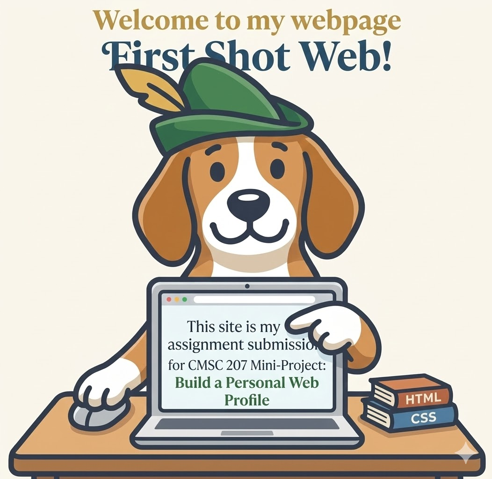
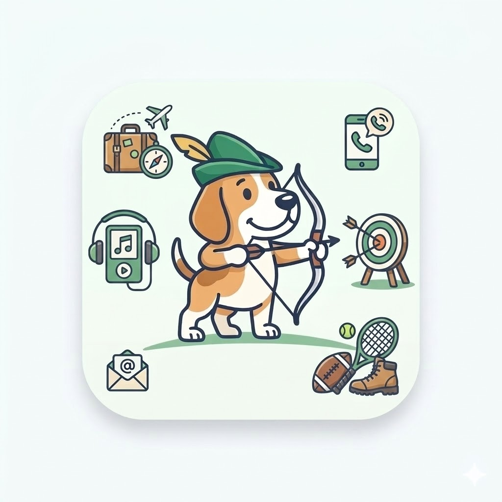

Designed by: Ariel Herrera
Hi! I'm Ariel Herrera: a graduate from AMA Computer College East Rizal with a Bachelor's Degree in Computer Science. I'm an OFW working in one of the financial institutions in Singapore. Been here for more than 15 years, and currently working as a Systems Analyst specializing in AS400 programming languages such as RPGLE. I'm also knowledgeable in using Control-M to schedule a job to run at specific timings.
I'm taking my Master's Degree (Master in Information Systems) in UPOU to help boost my learning in new technologies and earn a new Degree to aid in my career. The Degree will also help a lot should I need to relocate to another country, or retire in the Philippines.
Personally-wise, I am an introvert who has quite a number of decent friends. I admittedly find communication somewhat a challenge, which I do hope I can overcome and get better at in due time. On the side, I sometimes love to make jokes, or be corny , or deliver witty remarks when the situation is just light and just right.
Fun Fact!
I want to visit Domremy again sometime (or other places visited by Joan of Arc).
--Educational Background-------
Kindergarten: Pakistan Urdu School, Bahrain
Elementary: Ibn Al Hytham Islamic School, Bahrain || NCBC Taytay Rizal, Philippines
Secondary: Angono Private High School, Philippines
Tertiary: AMA Computer College East Rizal, Philippines
--Employment-------------------
(Philippines) Link2Support, Inc
(Philippines) ITSI (Client: Maybank PH)
(Philippines) Kforce Global Solutions, Inc. (Client: Amkor PH)
(Singapore) Comtel Solutions (Client: Maybank SG, OCBC)
(Singapore) OCBC Singapore
--Technical Skills-------------
Visual Basic 6, VBA (Excel)
As400 Technologies (RPGLE, CLLE, PRTF, DSPF)
Control-M
--Other Skills-----------------
Creation of FSD, TSD
Aldon, Thenon Change Management System

Below are some of the hobbies that I am fond of doing:
With that said, I find my hobbies varying from one activity to the next. Sometimes I ask myself if this is rather normal. Lol.